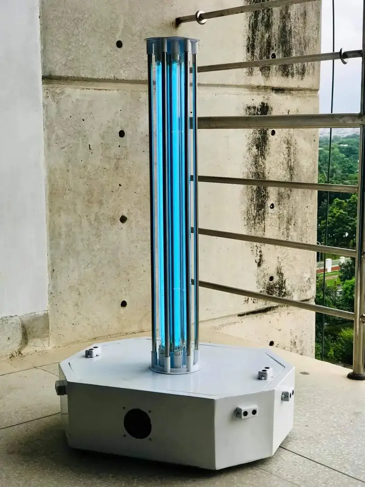

Hello! I'm Akib, a second-year PhD student in EECS at MIT who is broadly interested in robotics and its intersections with computer graphics and vision. I am affiliated with the MIT Computer Science and Artificial Intelligence Laboratory (MIT CSAIL) and advised by Professor Mina Konaković Luković as a member of the Algorithmic Design Group.
I develop computational methods that integrate differential geometry, physics-based simulation, machine learning, and digital fabrication to co-design structure and behavior in physically realizable systems, enabling new classes of soft robots, deployable mechanisms, and metamaterials.
Outside research, you’ll often find me hiking or playing table tennis, chess, and badminton. If you would like to collaborate or just chat about research, happy to connect; feel free to reach out!